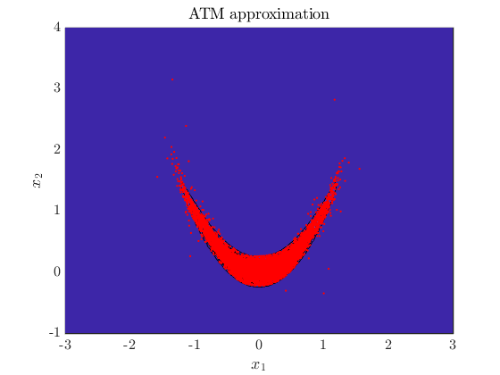
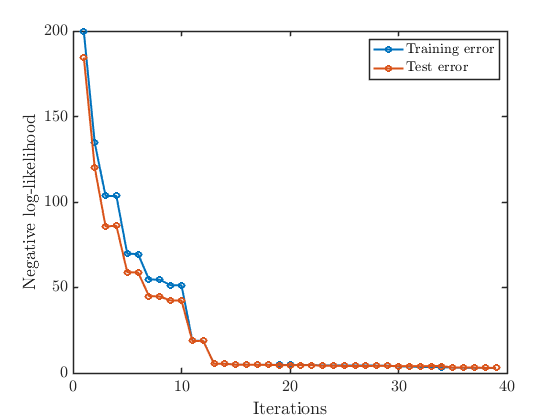

Contents
clear; close all; clc
addpath(genpath('../../src'))
sd = 2; rng(sd);
pi = Banana();
d = 2;
Build map adaptively
max_terms = 40;
N = 2000;
Ztrain = randn(N,d);
Zvalid = randn(N,d);
basis = ProbabilistHermiteFunction();
T = identity_map(1:d, basis);
T = TriangularTransportMap(T);
[Topt, output] = adaptive_transport_map(T, pi, Ztrain, Zvalid, max_terms);
Term 2 - Training error: 199.6112, Validation error: 184.4407
Term 3 - Training error: 134.7613, Validation error: 120.2901
Term 4 - Training error: 103.5518, Validation error: 85.7179
Term 5 - Training error: 103.5113, Validation error: 86.0994
Term 6 - Training error: 69.7413, Validation error: 58.9712
Term 7 - Training error: 69.5695, Validation error: 58.7790
Term 8 - Training error: 54.7355, Validation error: 45.0130
Term 9 - Training error: 54.5411, Validation error: 44.7176
Term 10 - Training error: 51.3099, Validation error: 42.3905
Term 11 - Training error: 51.3087, Validation error: 42.4026
Term 12 - Training error: 18.8919, Validation error: 18.7309
Term 13 - Training error: 18.8736, Validation error: 18.7577
Term 14 - Training error: 5.4369, Validation error: 5.3777
Term 15 - Training error: 5.4316, Validation error: 5.3769
Term 16 - Training error: 4.9026, Validation error: 4.8452
Term 17 - Training error: 4.8729, Validation error: 4.8494
Term 18 - Training error: 4.8298, Validation error: 4.7757
Term 19 - Training error: 4.8164, Validation error: 4.7716
Term 20 - Training error: 4.7178, Validation error: 4.6035
Term 21 - Training error: 4.6897, Validation error: 4.6138
Term 22 - Training error: 4.6529, Validation error: 4.5732
Term 23 - Training error: 4.6523, Validation error: 4.5797
Term 24 - Training error: 4.4727, Validation error: 4.1989
Term 25 - Training error: 4.4703, Validation error: 4.2387
Term 26 - Training error: 4.3938, Validation error: 4.0967
Term 27 - Training error: 4.3815, Validation error: 4.0980
Term 28 - Training error: 4.3637, Validation error: 4.1183
Term 29 - Training error: 4.3475, Validation error: 4.1386
Term 30 - Training error: 4.3464, Validation error: 4.1372
Term 31 - Training error: 3.8383, Validation error: 4.0270
Term 32 - Training error: 3.7357, Validation error: 4.0194
Term 33 - Training error: 3.5378, Validation error: 3.9808
Term 34 - Training error: 3.5134, Validation error: 4.0830
Term 35 - Training error: 3.5083, Validation error: 4.0513
Term 36 - Training error: 3.0738, Validation error: 3.1904
Term 37 - Training error: 3.0333, Validation error: 3.1784
Term 38 - Training error: 3.0328, Validation error: 3.1943
Term 39 - Training error: 2.9538, Validation error: 3.0224
Term 40 - Training error: 2.9536, Validation error: 3.0228
Plot approximation
Zeval = randn(1e4,2);
X_approx = Topt.evaluate(Zeval);
xx = linspace(-3,3,100);
yy = linspace(-1,4,100);
[X1,X2] = meshgrid(xx,yy);
logpi_true = pi.log_pdf([X1(:),X2(:)]);
logpi_true = reshape(logpi_true, size(X1,1), size(X2,2));
figure
hold on
contourf(X1, X2, exp(logpi_true), 20)
plot(X_approx(:,1), X_approx(:,2), '.r','MarkerSize',2)
xlabel('$x_1$')
ylabel('$x_2$')
xlim([-3,3])
ylim([-1,4])
title('ATM approximation')
set(gca,'FontSize',16)
hold off
figure
hold on
plot(1:length(output.train_err), output.train_err, '-o')
plot(1:length(output.valid_err), output.valid_err, '-o')
xlabel('Iterations')
ylabel('Negative log-likelihood')
legend('Training error','Test error')
set(gca,'FontSize',16)
hold off
 